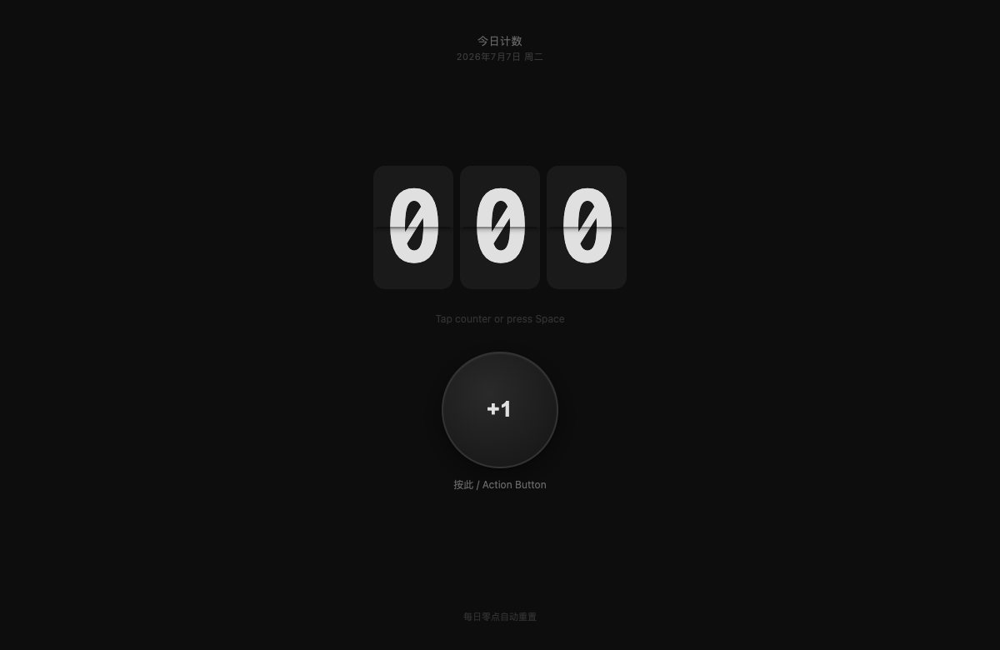
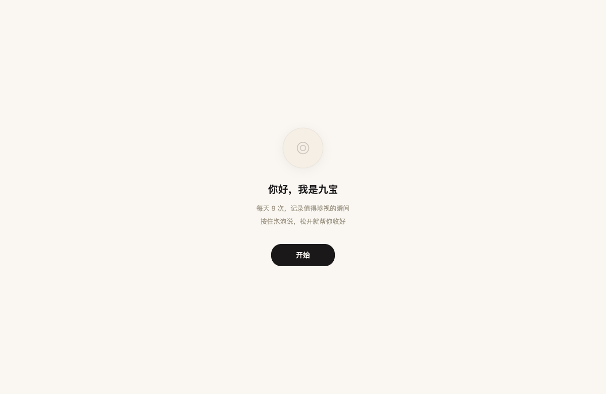
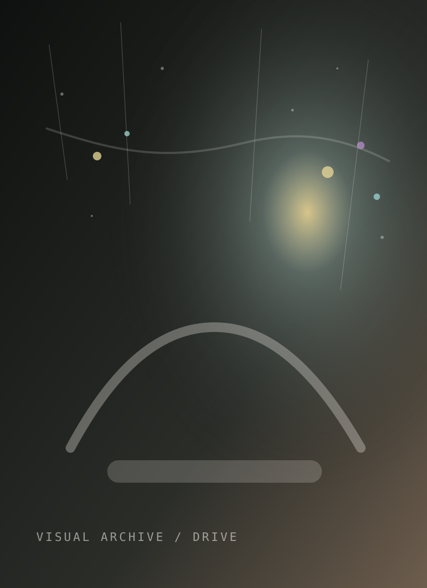

Robotedge Laboratory, Universiti Malaya
PhD research engineering in Computer Science, focused on UAV autonomy, swarm robotics, ROS/Gazebo simulation, technical documentation, and lab coordination.
Computer Science PhD candidate working across Python, ROS simulation, AI-assisted engineering, documentation, and product-minded delivery.
PhD research engineering in Computer Science, focused on UAV autonomy, swarm robotics, ROS/Gazebo simulation, technical documentation, and lab coordination.
Built and reviewed UAV simulation environments, path-planning workflows, and autonomy study artifacts with Python, C++, ROS Noetic, Gazebo, RViz, and Linux.
Created reporting workflows, supported process optimization, coordinated vendors and internal teams, and produced management-ready technical documentation.
B.Eng. and M.Eng. training built the baseline for modeling, experiments, technical writing, and engineering problem decomposition.
The research layer keeps the site personal: robotics, autonomy, and deployable AI systems remain the center of my technical taste.
Whether the domain is UAV autonomy or an internal business module, I start by making requirements, edge cases, and review criteria explicit.
My strongest current stack is Python with robotics tooling, Linux, Git, Markdown documentation, and front-end basics for technical interfaces.
I treat implementation, test notes, technical explanation, and follow-up risks as one delivery package.
Projects are shown here as practical systems: what I built, what stack was involved, and why it matters for software delivery.
Built multi-UAV simulation environments for autonomy, formation, obstacle avoidance, and path-planning study.

Designed a repeatable workflow for coding support, documentation, experiment tracking, and knowledge management with human review.

Implemented a bilingual static site with responsive layout, theme switching, navigation behavior, canvas visualization, and resume download.

Supported AI-based industrial vision route evaluation, supplier comparison, reporting, integration planning, and delivery-risk clarification.
My default operating style is simple: clarify scope, build the smallest reviewable version, validate behavior, then leave notes that the next person can use.
Confirm requirement, user flow, input data, edge cases, and acceptance criteria with the product or senior engineer.
Create a small, readable module first, then improve structure once behavior is visible and reviewable.
Check happy paths, failure cases, logs, data shape, and browser or runtime behavior before handoff.
Write the decision, usage, known limitations, and next step so teammates can continue without guessing.
A reserved space for photography and visual notes. It keeps the site from reading only as a technical CV, and gives room to show composition, color, and editing taste.
This block is intentionally ready for real photo sets: 6-12 selected frames, short captions, and a separate gallery page later.
Best-fit conversations: robotics software, Python development, internal tools, AI-assisted engineering workflows, technical documentation, and product-minded delivery.